Hi-Fi and Low-Fi
Prototypes
Persona
After identifying our Key user task, we procced with generating a persona to better represent our user needs.
Name: Peter Pangihutan
Age: 21
Occupation: Student
University: National University of Singapore
Cooking Skills: Intermediate
Storyboards and Scenarios
Next, our persona will experience some problems during his cooking process, which are solved using our User Task. Scenario shows the problem faced while Story Board illustrates the same problem with pictures.
User Task
Users should be able to quickly decide what to cook based on their ingredients and mood.Scenario
Peter Pangihutan wants to cook his dinner in PGP after a long and tiring study session in his room.
He decides to reward himself by making his favorite spaghetti and meatballs. However, when he opens
the communal pantry fridge, he is horrified to see that he has run out of pasta and some other
ingredients as well. Left confused on what to cook, he scrounges both his cupboard and refrigerator,
trying to come up with a recipe using the ingredients he has left. After wasting a good amount
of time contemplating and still not knowing what to cook, he starts getting hungry and impatient.
He decides to turn to the internet instead and starts searching online for some quick recipes
using his remaining ingredients. He finally finds a suitable recipe and begins preparing his meal,
though by now an entire hour has passed since he first wanted to start cooking. Peter is starving,
frustrated that so much time has been wasted, and stressed that he now has 1 less hour to
complete his assignment due later that night.

User Task
Users should be able to get suggested recipes on their expiring ingredients.Scenario
Peter Pangihutan had just come back from a shopping trip to Sheng Siong and was putting the groceries away
in the communal pantry in PGP. He had bought some extra leafy vegetables as he was running out of them, and
stored them together with the old batch of vegetables. Being thrifty, he had also bought potatoes in the
large discounted bag and took a mental note to use them quickly before they sprout and spoil. Not wanting to
eat the same meal multiple times however, he searched online for various recipes using potatoes and started
planning the different recipes for the next few days.
After a few days of eating every meal with potatoes, Peter starts getting tired of it and deviates from his
originally planned recipes. He decides to cook something else that day using the leafy vegetables he had
bought earlier. However, when he opened the refrigerator, he realized that some of them had already wilted
and spoiled. He had completely forgotten about the old batch of vegetables that he had left, as he got
confused with the new batch of vegetables and thought that the vegetables would expire later. He grumbled
about wasting food and money before throwing the spoilt vegetables away. Not wanting to eat more potatoes
however, He decides to cook something else entirely with his other ingredients. After another few days of not
eating potatoes, the same thing happened where he forgot about them, and they all
expired and had to be thrown away.
User Task
Users should be able to generate a list of ingredients to buy at the supermarket to ensure they do not miss out on any items.Scenario
It is another Sunday, and Peter Pangihutan, being a fun loving student, has
just finished hanging out with his friends (as they do every week). On his
way back to PGP, as usual, he stops by the Clementi Fairprice to purchase
all the ingredients he needs for next week's cooking. His routine trip to
Clementi Fairprice on Sundays is his only supermarket trip of the week;
making a singular trip saves him traveling time. As always, Peter already
has a mental list on what ingredients he needs. He walks down the
supermarket aisles, trying to recall the ingredients on his
mental list that he needs to buy.
After 30 minutes of grocery shopping, Peter looks through his basket and is
confident that he has everything he set out to buy. He is pleased with the
discounted pasta and eggs he managed to find today. After paying for his
groceries, he heads back to PGP.
Upon reaching PGP, Peter happily labels his ingredients with his name and
places them into the communal pantry fridge. He is excited to finally
be able to cook himself the spaghetti and meatballs he has been craving
since last week. But then it dawns on him: he forgot to buy the meatballs!
He was so confident, but his memory has failed him yet again. His disappointment
is immeasurable as he faces the prospect of another meatball-less week.
Low Fi Prototypes
After having a better understanding of the problem, we each proceeded to create 2 Low-Fi prototype for 2 different task
Zac's Task 1 Low Fi
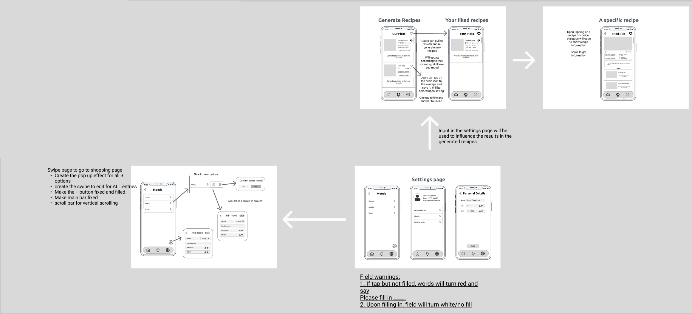Darius's Task 1 Low Fi
Felicia's Task 2 Low Fi
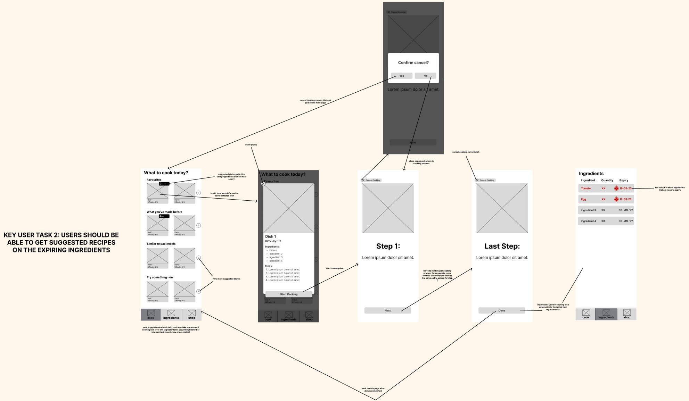Darius's Task 2 Low Fi
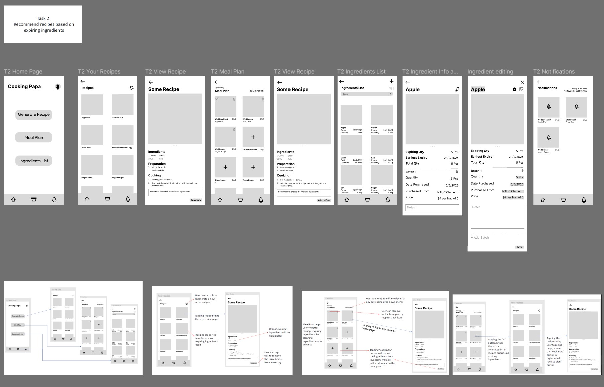Yu Jie's Task 2 Low Fi
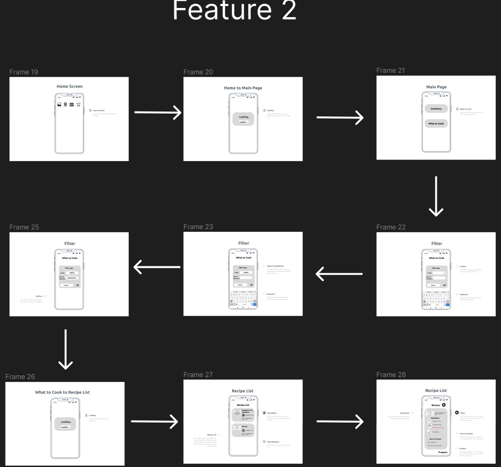 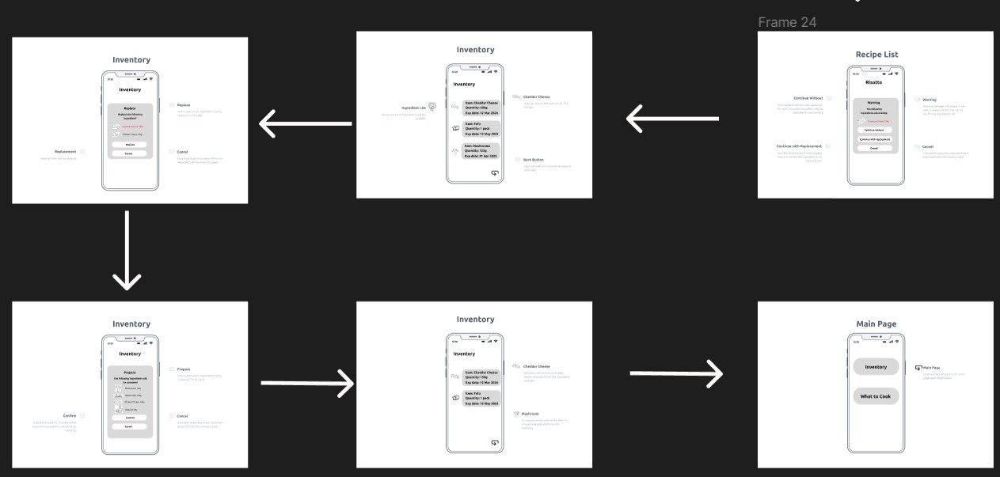Zac's Task 3 Low Fi
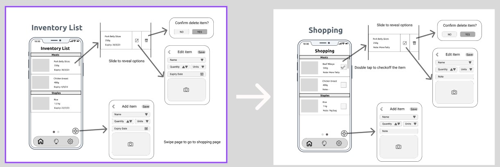Felicia's Task 3 Low Fi
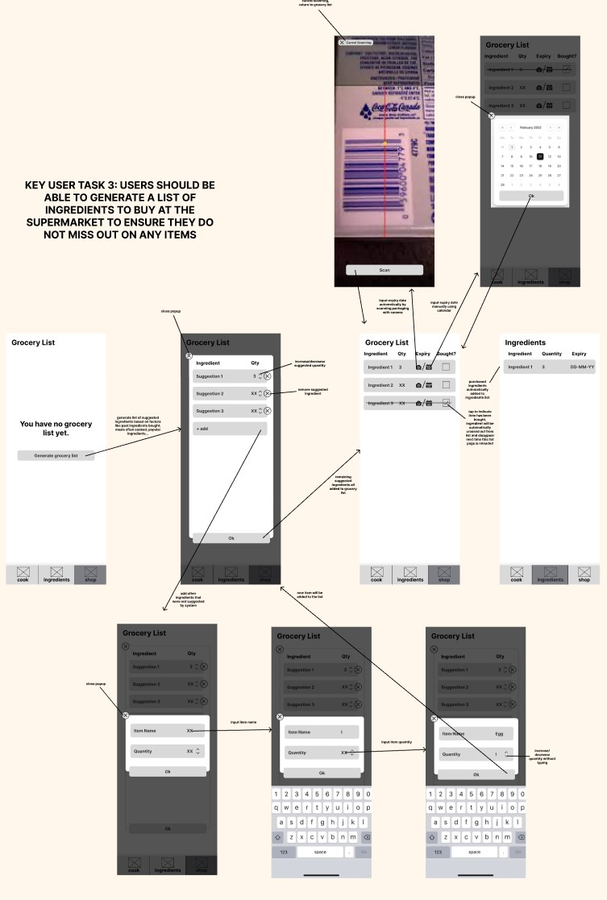Yu Jie's Task 3 Low Fi
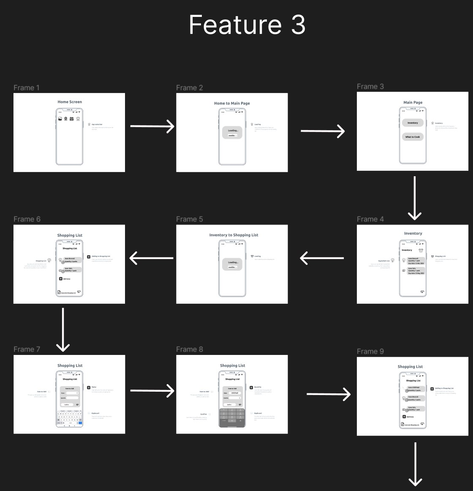 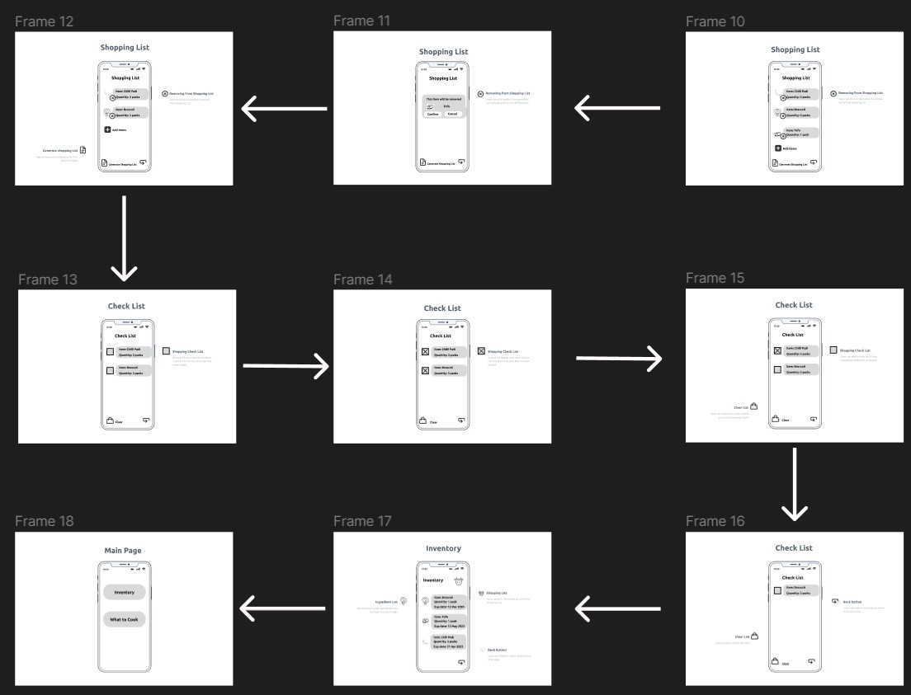Felicia's Low Fi Zac's Low Fi Darius's Low Fi Yu Jie's Low Fi
Internal Team Review
We conducted an internal team review after creating our Low Fi and decided which ones to preceed on for our Hi Fi
Hi Fi Prototypes
Lastly, we refiened the best Low-Fi into a Hi-Fi prototype. Gifs are shown below on how users would interact with the app to complete certain tasks
| Generating recipes based on preffered cooking time |  |
| Editing of Recipe for insuffcient ingredients |  |
| Adding a new Recipe into the app |  |
| Editing User's particulars | 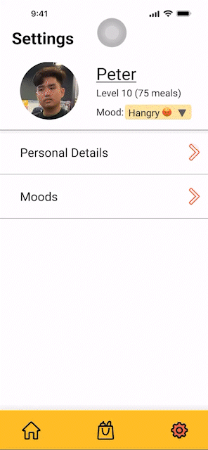 |
| Adding a new mood which helps recommend dishes to users | 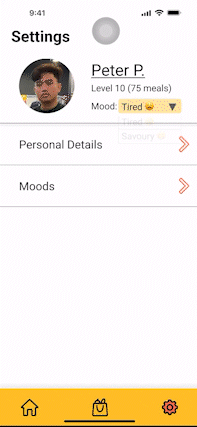 |
| Adding and Deleting ingredients from shopping cart | 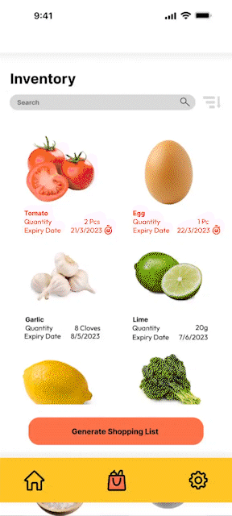 |
| Checking out and adding new purchases into inventory | 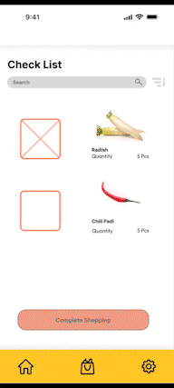 |
Felicia's Hi Fi Zac's Hi Fi Darius's Hi Fi Yu Jie's Hi Fi